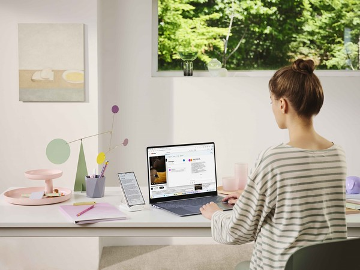

Como escolher seu primeiro notebook? 🎉
Para escolher seu primeiro notebook, o passo mais importante é definir a finalidade de uso e o quanto você pode gastar, garantindo peças rápidas como um bom SSD.
Defina o uso:
Estudos e tarefas básicas (internet e textos): Modelos de entrada com bom custo-benefício.
Trabalho, multitarefas ou faculdade exigente: Modelos intermediários que não travam com várias abas abertas.
Jogos ou edição de vídeos: Modelos mais potentes com placa de vídeo dedicada.
Trabalho, multitarefas ou faculdade exigente: Modelos intermediários que não travam com várias abas abertas.
Processador (O cérebro):
O que buscar: Prefira Intel Core i3 ou i5 (ou AMD Ryzen 3 / Ryzen 5).
O que evitar: Fique longe de processadores fracos como Intel Celeron ou Atom, pois eles travam muito.
Memória RAM (Ajudante rápido):
8 GB de RAM: O mínimo recomendado para uso diário sem lentidão.
16 GB de RAM ou mais: Ideal para programas pesados e jogos.
Armazenamento (Onde guarda arquivos):
Escolha SSD: Sempre compre notebooks com SSD (e não com HD antigo), pois o SSD liga o computador em segundos.
Tamanho: Procure por pelo menos 256 GB, mas 512 GB é o ideal para não lotar rápido.